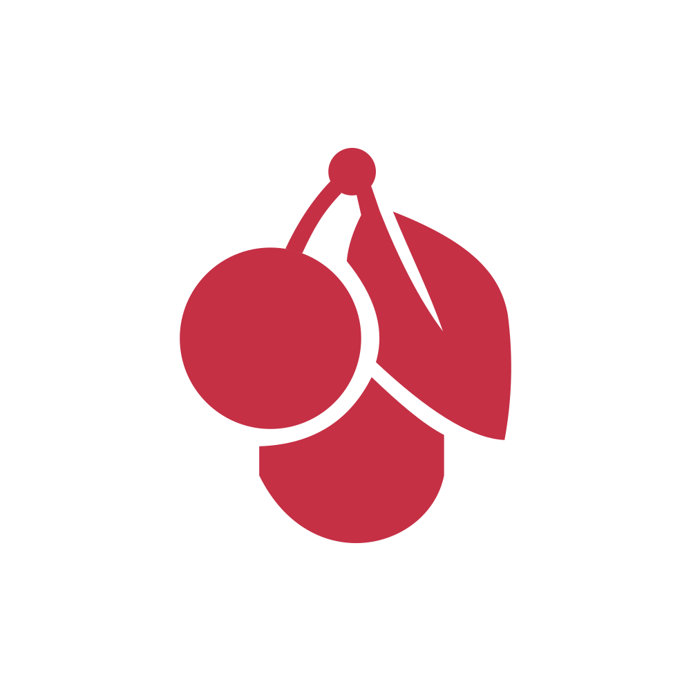

CHERRY는 1953년 Walter Lorain Cherry가 설립했습니다.
미국의 기업가 정신과 독일의 엔지니어링 기술이 결합된 CHERRY의 역사와 미래는 오늘날 품질·혁신·디자인·지속가능성의 대명사로 자리잡았습니다. 현재 본사는 독일 아우어바흐(Auerbach in der Oberpfalz)에 있으며, CEO Rogier Volmer와 COO Dr.Udo Streller가 이끌고 있습니다.
CHERRY는 누가 이끌고 있을까요?
2008년 Peter Cherry의 회사 매각 이후, ZF Friedrichshafen AG와의 파트너십을 거쳐 2016년부터 CHERRY 브랜드는 GENUI Partners가 운영하고 있습니다. 이후 2020년에는 Argand Partners가 주요 투자자로 합류했으며, 현재 CHERRY Europe GmbH는 독일 Auerbach in der Oberpfalz에 본사를 두고 Rogier Volmer(CEO)와 Dr. Udo Streller(COO)가 경영을 맡고 있습니다.